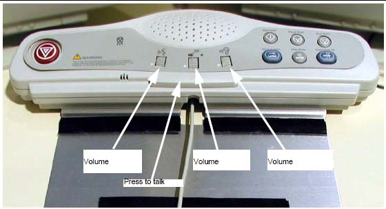

Operating Documentation
Direction 5193574-800, Rev# 22
LightSpeed 7.X Service Methods
Module Version 1.0, Version Date 4/22/10
Operating Documentation |
| Required Persons | Preliminary Reqs | Procedure | Finalization |
|---|---|---|---|
| 2 | Not Applicable | labor on-site | Not Applicable |
Illustration 1: SCIM Volume Controls

To adjust the volume of the patient speaker in the table:
Adjust the left-most volume thumb wheel on the SCIM while speaking into the console microphone. (Press the bar on the SCIM to talk; release the bar to listen.)
The assistant should be able to clearly hear the operator.
To adjust the console speaker volume:
Have an assistant speak into the gantry microphone.
Adjust the SCIM console volume knob until you can clearly hear the assistant.
On the Scan Desktop, select [PROTOCOL MANAGEMENT].
Select [AUTO VOICE RECORD].
Click the [3.4] button, to the right of FF2. Inspiration.
Click the [PLAY] button, to play the Inspiration AutoVoice message.
Adjust the center volume thumb wheel while Autovoice is playing, to set the volume for the gantry speaker.
Repeat steps 4 and 5 as necessary to achieve satisfactory volume.
Select [DONE], then select [QUIT].
| NOTE: | If a satisfactory volume cannot be achieved, refer to the system service manual and review the intercom module setup procedure. |
No finalization steps.